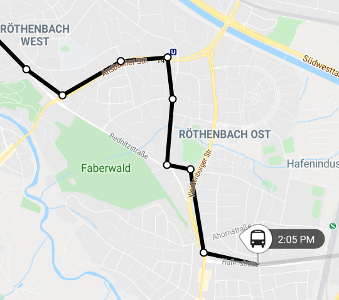
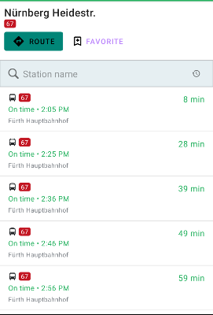
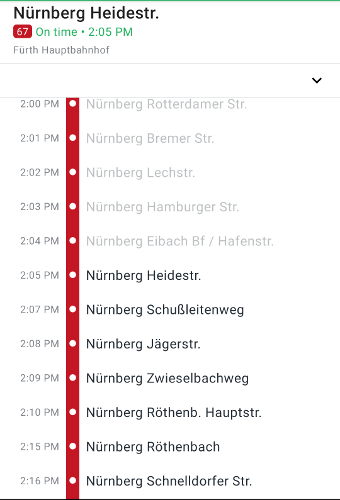

ServiceStopMapFragment

The ServiceStopMapFragment displays a particular scheduled service's route.
<fragment
android:id="@+id/mapFragment"
class="com.skedgo.tripkit.ui.map.servicestop.ServiceStopMapFragment"
android:layout_width="match_parent"
android:layout_height="match_parent" />To tell it which route to display, call the setService function with a TimetableEntry, or if you are using a TimetableFragment,
you can give the map to it and it will automatically display routes when the entries are clicked.
TimetableFragment

The TimetableFragment lists all scheduled services for a particular stop. If you pass it a ServiceStopMapFragment,
it will automatically call setService when the user clicks on a particular service. You can also do that manually from a OnTimetableEntrySelectedListener.
Like a few of the fragments in the Trip Results, you can display your own custom buttons.
var timetableFragment = com.skedgo.tripkit.ui.timetables.TimetableFragment.Builder()
.withStop(location)
.withButton("route", R.layout.route_button)
.withButton("favorite", R.layout.bookmark_button)
.build()When the user clicks a particular timetable entry, the OnTimetableEntrySelectedListener will be called.
// If we add our ServiceStopMapFragment as a listener, it will automatically display a selected timetable entry.
timetableFragment.addOnTimetableEntrySelectedListener(mapFragment)
timetableFragment.addOnTimetableEntrySelectedListener { timetableEntry, scheduledStop, minStartTime ->
// Perhaps you'd like to show the service detail now?
}And when they click on any of the TripKitButtons that you provided, the OnTripKitButtonClickListener will be called.
timetableFragment.setOnTripButtonClickListener { id, scheduledStop ->
if (id == "route") {
Toast.makeText(activity, "Will route to ${scheduledStop.displayAddress}", Toast.LENGTH_SHORT).show()
} else if (id == "favorite") {
Toast.makeText(activity, "Will favorite ${scheduledStop.nameOrApproximateAddress}", Toast.LENGTH_SHORT).show()
}
}ServiceDetailFragment

To show the details about a particular service, you can use the ServiceDetailFragment which shows the entire scheduled
service line. If you pass it a ServiceStopMapFragment,
it will automatically have the map move and zoom in on the scheduled stop that a user clicks on.
You'll need to pass it a TimetableEntry and a ScheduledStop.
var fragment = ServiceDetailFragment.Builder()
.withTimetableEntry(timetableEntry)
.withStop(scheduledStop)
.build()You can then add OnScheduledStopClickListeners to handle users clicking on individual stops.
fragment.addOnScheduledStopClickListener(mapFragment)
fragment.addOnScheduledStopClickListener {
// You could collapse a bottom sheet, for example.
}